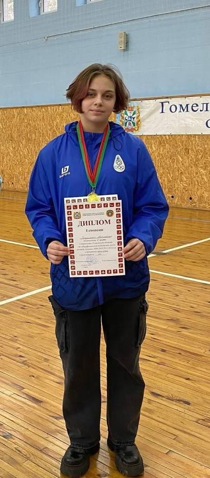

Юная биатлонистка
Лыжные гонки, биатлон
Ксения Кондратьева (род. 2009, Жлобин) — юная белорусская спортсменка, воспитанница Центра олимпийского резерва г. Жлобина. Выступает в лыжных гонках и биатлоне, стабильно попадает в призы на республиканских и областных стартах.
Ксения тренируется в жлобинском ЦОРе. Первые шаги в спорте она сделала в 7–8 лет: тренеры сразу отметили её выносливость и хорошую технику классического хода. Позже, когда в её группе стали пробовать элементы биатлона, оказалось, что у Ксении стабильная стрельба лёжа — это стало её сильной стороной.
Ключевые результаты: 2024 — бронза в спринте классическим стилем на первенстве Гомельской области; 2025 — серебро в гонке на 5 км свободным стилем на республиканских соревнованиях «Снежная королева»; Летний биатлон (2025) — третье место в масс-старте на этапе Кубка Белорусской федерации биатлона в Новополоцке; Спартакиада ДЮСШ (2026) — серебряная медаль в смешанной эстафете в составе команды ЦОРа Жлобина.
Тренеры выделяют у Ксении умение «держать темп» на второй половине дистанции и хладнокровие на рубеже — даже при усталости она не торопится с выстрелами и старается сохранять технику.